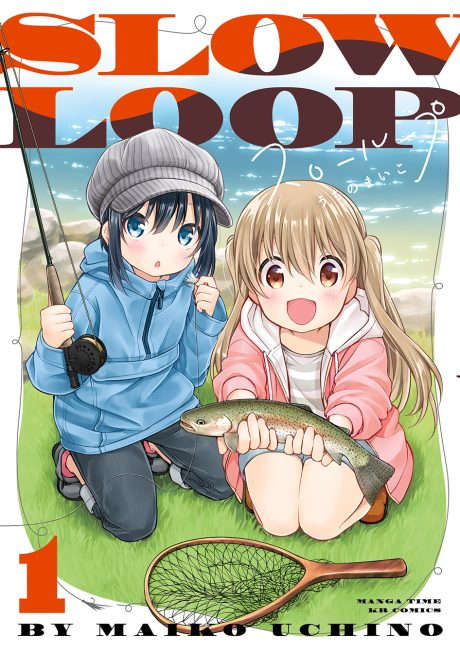

Anime
Anime
Manga2022 · Slice of Life, Sports
Slow Loop
スローループ
AniList7.1
Animeter—
Episodes12 ep
MangaCh. 31
Anime finished. Where does the manga pick up?
Start at Chapter31
The anime covers the first 30 chapters, so start at chapter 31 (volume 5). The manga is ongoing but has been on hiatus.
130ongoing
Season 1Start reading here